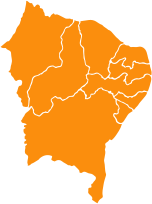

Norte
Nordeste

Centro-Oeste

Sudeste

O acervo musical aqui apresentado é composto por 50 composições da música popular tradicional brasileira que integram o acervo do Grupo Aruanda. É um fruto cultivado desde 1960 e que tem sido regado com pesquisas e com um saber-fazer que é próprio do Grupo e que vem sendo construído ao longo de décadas.
Por muito tempo, vários dos musicistas do Aruanda aprenderam a tocar e a cantar no próprio coletivo, ou seja, predominava entre os músicos a transmissão de conhecimento baseada na oralidade, assim como acontece nos grupos tradicionais da cultura popular brasileira. Entretanto, apesar da importância da oralidade no saber-fazer do Grupo Aruanda, como forma de registro e consequente preservação de seu acervo, transcrevemos estas 50 músicas aqui disponibilizadas em partituras e cifras.
É preciso ressaltar que esta é apenas uma parte do acervo musical do Grupo, que possui mais de 100 músicas da cultura popular brasileira pesquisadas. Os registros em partitura e em cifra materializam todo esse saber-fazer, entendido como o modo de tocar cada um dos instrumentos musicais de cada música; o modo de cantar e de interpretar as canções; e os arranjos musicais elaborados pelo Grupo desde a sua fundação até os dias atuais.